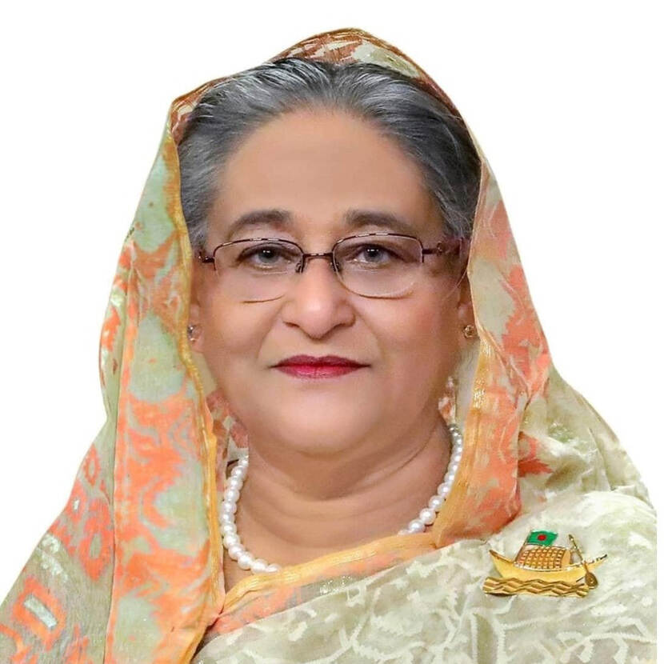
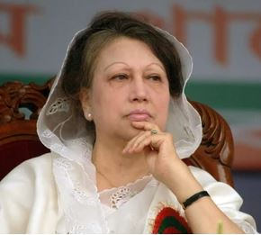

A Bangladesh Jatiya Party politician. She is the current Jatiya Sangsad member from Mymensingh-4 constituency and the incumbent Leader of the Opposition in the 11th parliament. She is a senior co-vice chairperson of the Jatiya Party (Ershad) and the widow of former Bangladesh president Hussain Muhammad Ershad.
Born: July 19, 1943 (age 77 years), Mymensingh District
Spouse: Hussain Muhammad Ershad (m. 1956–2019)
Activity: Leader of Opposition

Sheikh Hasina
Nominee for Bangladesh Awami League (BAL)
Hasina is the daughter of Bangladesh's first President and founding father Sheikh Mujibur Rahman. She has been leading the Bangladesh Awami League (AL) since 1981. In 2008, she returned as Prime Minister with a landslide victory. In January 2014, she became Prime Minister for a third term in an unopposed election. She won a fourth term in December 2018.
Born: September 28, 1947 (age 73 years), Tungipara
Education: University of Dhaka (1973), Azimpur Govt. Girls' School and College, Eden Mohila College
Awards: Planet 50-50 champion by UN-Women, 59th place on Forbes' list of 100 most powerful women in the world

Khaleda Zia
Nominee for Bangladesh Nationalist Party (BNP)
A politician of Bangladesh, was former Prime Minister of Bangladesh from 1991 to 1996, and again from 2001 to 2006. She is the current chairperson and leader of the Bangladesh Nationalist Party (BNP) which was founded by Rahman in 1978.
Born: 1945 (age 76 years), Jalpaiguri, India
Full name: Begum Khaleda Zia
Spouse: Ziaur Rahman (m. 1960–1981)
Education: Surendranath College
RS Turza
Nominee for Bangladesh Republican Party (BRP)
RS Turza is a young Bangladeshi politician. In February 2021, He's been leading his new political Party called Bangladesh Republican Party (BRP).